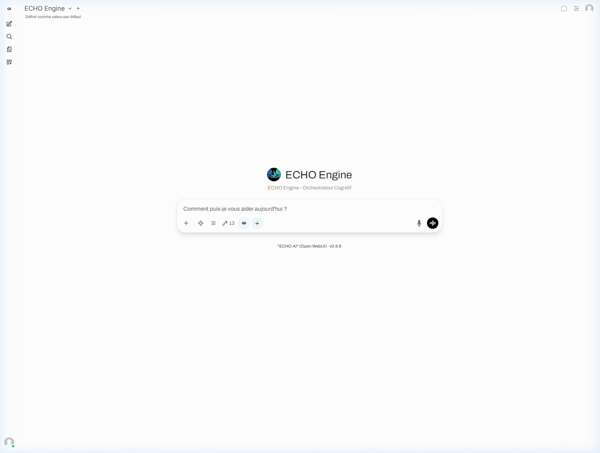
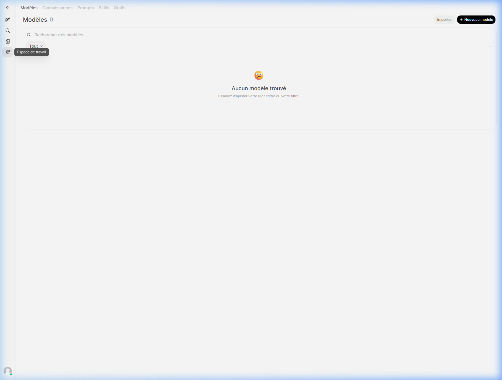
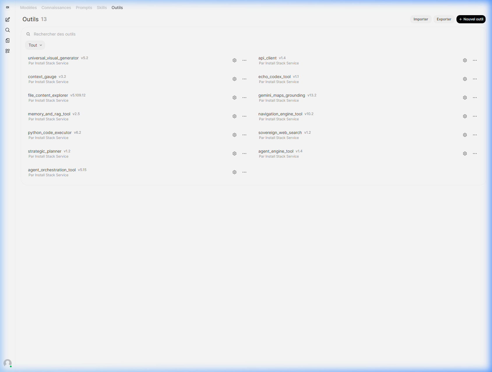
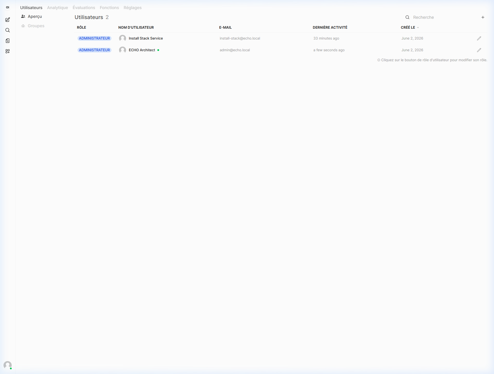
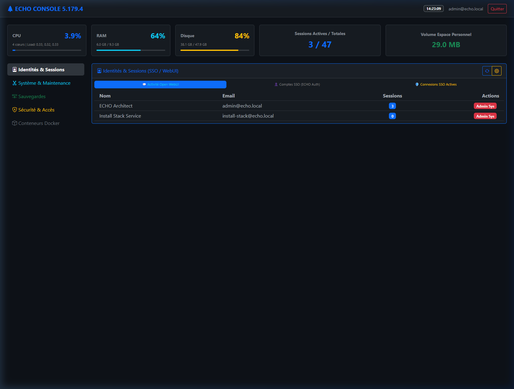
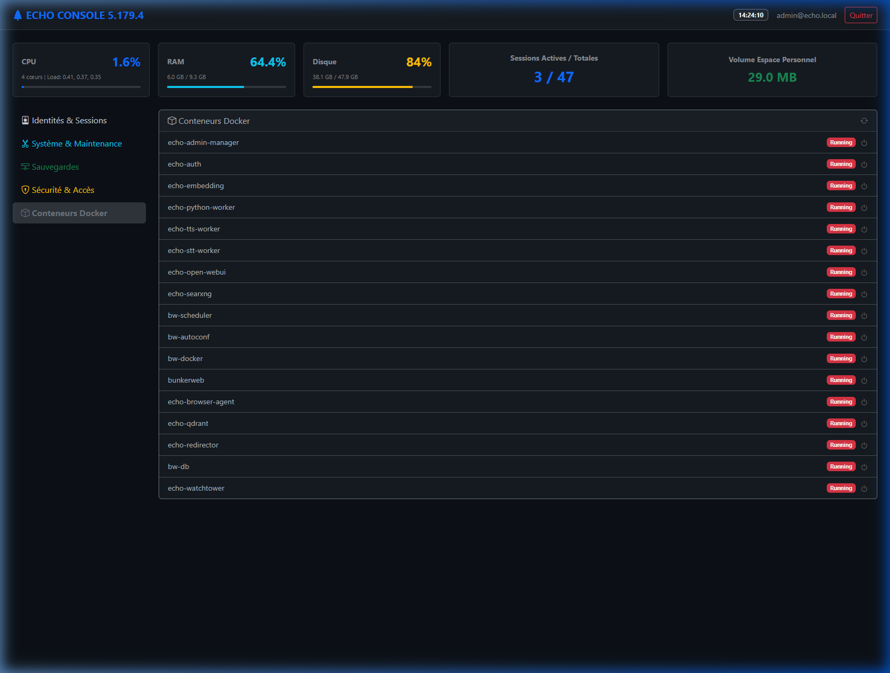
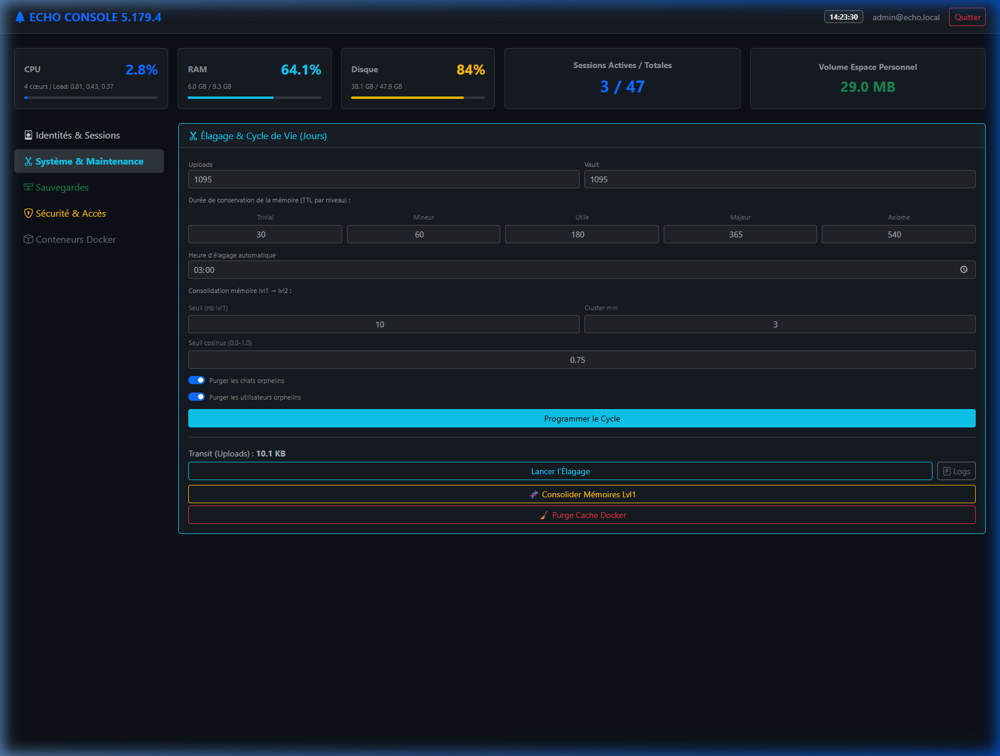
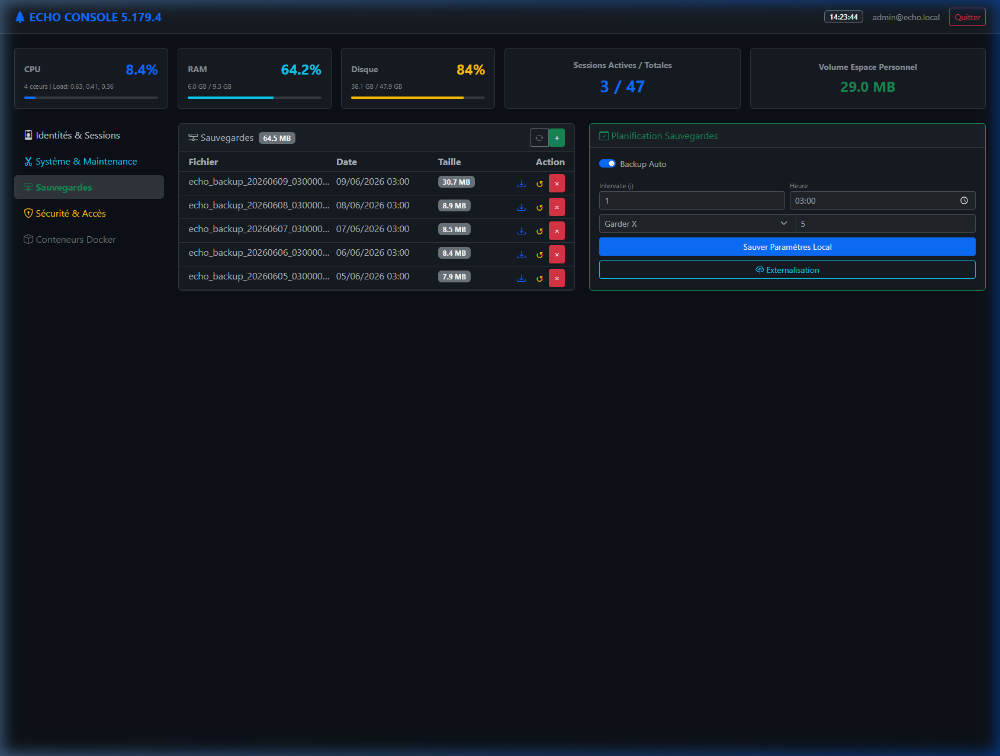
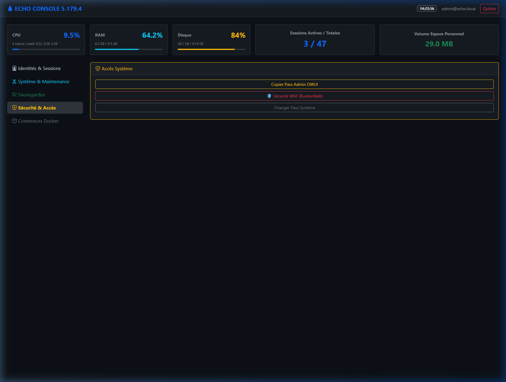

14. Manuel Utilisateur Intégré
Ce manuel documente l'utilisation de l'interface conversationnelle (Open WebUI) et de la console d'administration (Admin Manager) du framework ECHO. Il est destiné aux utilisateurs et aux administrateurs de l'infrastructure.
1. Connexion et Authentification Forte (SSO)
L'accès à l'ensemble de la plateforme ECHO est protégé par le module ECHO Auth (Antigravity 2.1) via BunkerWeb. L'utilisateur doit s'authentifier par adresse e-mail et mot de passe, suivis obligatoirement d'un code OTP (Time-based One-Time Password).
Comportement du Single Sign-On (SSO)
Une fois l'authentification validée sur auth.votre-domaine.public, le jeton JWT est propagé. La navigation transversale vers les autres sous-domaines (comme am.votre-domaine.public) s'effectue sans demande de reconnexion.
2. Interface Conversationnelle (Open WebUI)
Le point d'entrée principal est l'UI hébergée sur ui.votre-domaine.public. Cette interface permet d'interagir avec les modèles cognitifs selon les Méta-Principes dictés par le Kernel.
2.1 Chat Principal

La fenêtre de chat permet de dialoguer avec le Modèle. Les commandes (ex: !help, !status) y sont saisies. L'interface offre un accès direct aux contrôles contextuels via la barre latérale escamotable, où s'affiche notamment l'historique asynchrone des threads et l'activation des outils (Valves).
2.2 L'Espace de Travail (Workspace)

L'Espace de Travail permet la gestion des connaissances et des configurations. La section "Modèles" permet de visualiser et de paramétrer les modèles actifs (ex: Gemini Flash, Pro). C'est ici que l'utilisateur peut configurer ses bases documentaires RAG (Qdrant).

La section "Outils" recense l'Arsenal. L'interface affiche 12 outils pré-intégrés (notamment le Codex, le Web Navigator, et le système Delphi Council) prêts à être injectés dans le pipe_engine.
2.3 Panneau d'Administration (Open WebUI)

Accessible via le menu utilisateur, ce panneau est réservé aux réglages de base de l'interface (gestion des groupes d'utilisateurs WebUI, personnalisation UI/UX). Il ne doit pas être confondu avec l'Admin Manager (infrastructure).
3. Console d'Infrastructure (Admin Manager)
Accessible sur am.votre-domaine.public, l'Admin Manager est le centre névralgique de la supervision physique de la grappe Docker et de la gestion avancée de la sécurité. Son accès requiert les droits d'administration de plus haut niveau.
3.1 Tableau de Bord et Métriques

Le tableau de bord centralise la charge CPU/RAM du système hôte, l'espace disque disponible, et l'état global du cluster. Il permet d'anticiper les saturations matérielles dues aux opérations lourdes (comme l'embedding local).
3.2 Docker & Conteneurs

Cette section offre une vue temps réel sur l'orchestration Docker (via lecture du socket /var/run/docker.sock). En régime nominal de l'orchestrateur, l'interface liste l'ensemble des conteneurs en état Running (généralement 17 conteneurs incluant SearXNG, Qdrant, les Workers et BunkerWeb). Le redémarrage ciblé des services s'effectue depuis cet écran.
3.3 Sauvegardes et Purge (Système & Maintenance)


L'interface de maintenance autorise les opérations asynchrones de nettoyage (Vacuum SQLite, Purge du WAL) pour régénérer les performances des bases identité et conversationnelles. L'outil de sauvegarde à chaud garantit l'intégrité de identity.db sans interrompre l'expérience utilisateur.
3.4 Sécurité, Accès et Révocation

Cette page gère l'IdP. L'administrateur peut y forcer la déconnexion des sessions actives (revocation de JWT), imposer des resets de clés TOTP, et configurer le bannissement IP par interaction avec BunkerWeb.